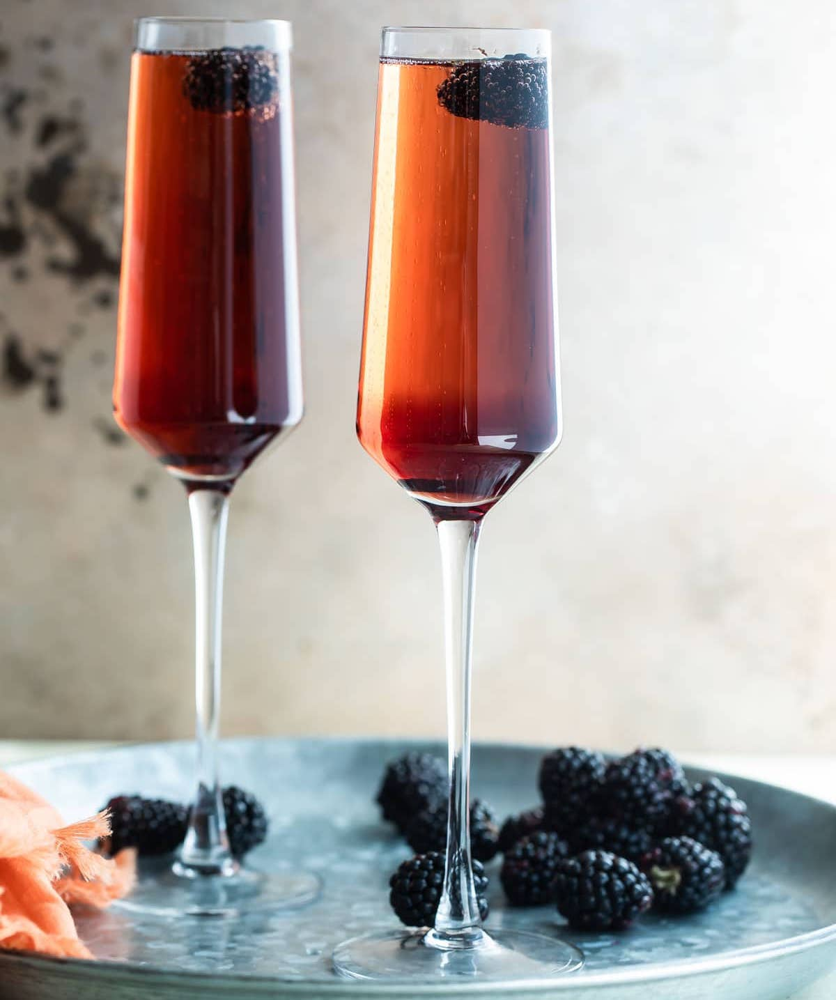

The cocktail was reportedly named for Felix Kir a catholic priest and decorated member of the French resistance. When Nazi soldiers marched into Dijon, Burgundy in 1940, many local officials fled. Kir remained in the city and helped more than 4,000 prisoners of war escape from a nearby camp. The Nazis confiscated Burgundy's iconic red wines and so to recreate the wine, Kir combined dry white wine with blackcurrent liqueur in an attempt to mimic the colour of the Burgundy wines. Kir's war heroism earned him inclusion in France's Legion D'honneur, and he served as mayor of Dijon from 1945 until his death in 1965.
Pour the Crème de Cassis into the bottom of the Champagne flute. Top up with chilled Champagne and add a fresh or frozen blackberry.